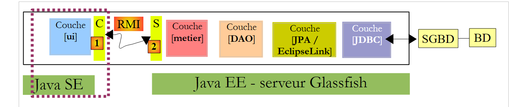
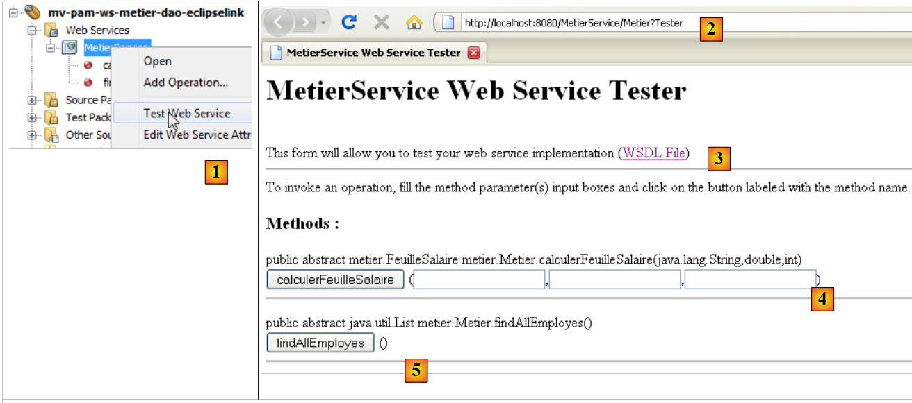
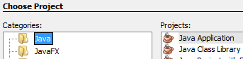
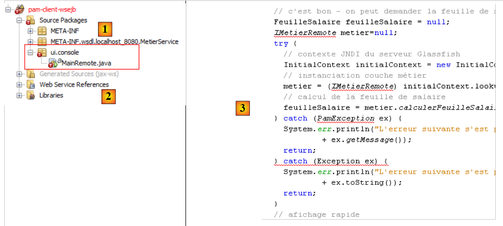
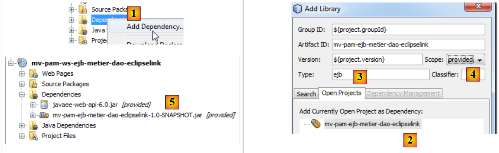
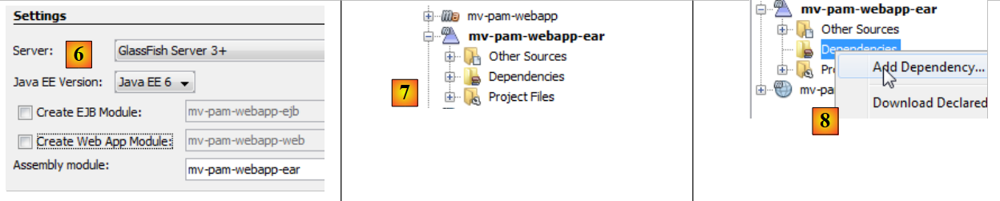
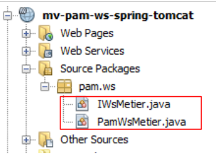
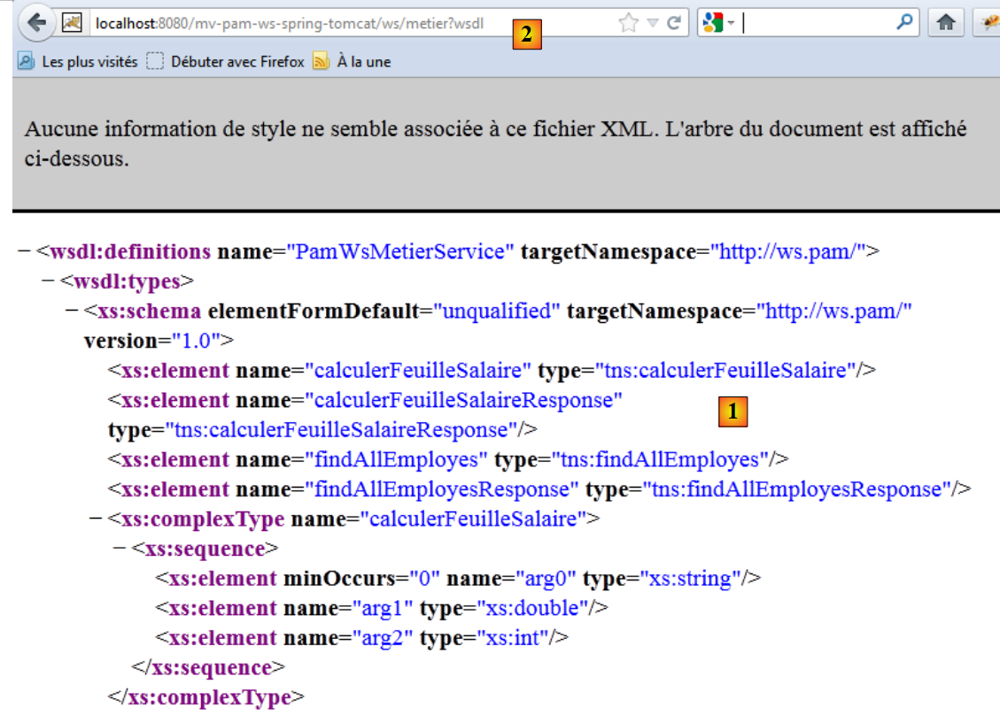
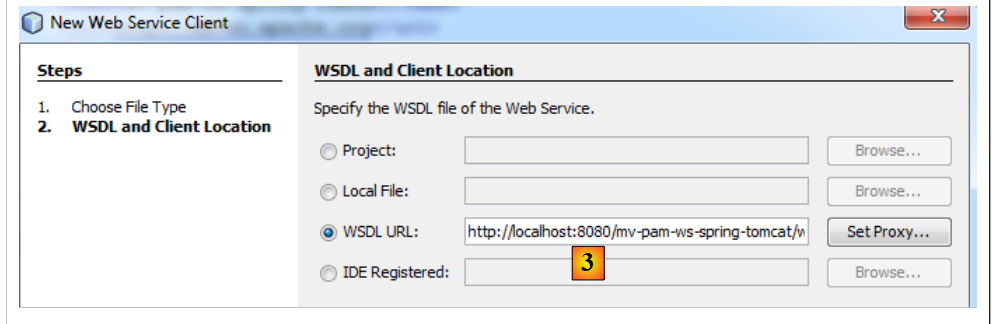

8. Version 4 – Client/Server in a Web Service Architecture
In this new version, the [Pam] application will run in client/server mode within a web service architecture. Let’s revisit the architecture of the previous application:
 |
Above, a communication layer [C, RMI, S] enabled transparent communication between the client [ui] and the remote [business] layer. We will use a similar architecture, where the communication layer [C, RMI, S] will be replaced by a layer [C, HTTP / SOAP, S]:
 |
The HTTP/SOAP protocol has the advantage over the previous RMI/EJB protocol of being cross-platform. Thus, the web service can be written in Java and deployed on the Glassfish server, while the client could be a .NET or PHP client.
We will develop this architecture in three different modes:
- the web service will be provided by the EJB [Business]
- the web service will be provided by a web application using the [Business] EJB
- the web service will be provided by a web application using Spring
A web service can be implemented in various ways within a Java EE server:
- by a class annotated with @WebService that runs in a web container
 |
- by an EJB annotated with @WebService that runs in an EJB container
 |
We will start with the latter architecture.
8.1. Web service implemented by an EJB
8.1.1. The server side
8.1.1.1. The NetBeans project
Let’s start by creating a new Maven project that is a copy of the EJB project [mv-pam-ejb-metier-dao-jpa-eclipselink]:
 |
In the following architecture:
 |
the [business] layer will be the web service contacted by the [ui] layer. This class does not need to implement an interface. It is annotations that transform a POJO (Plain Old Java Object) into a web service. The [Business] class, which implements the [business] layer above, is transformed as follows:
<dependency>
<groupId>org.swinglabs</groupId>
<artifactId>swing-layout</artifactId>
<version>1.0.3</version>
</dependency>
- Line 4: The @WebService annotation turns the [Business] class into a web service. A web service exposes methods to its clients. These methods must be annotated with the @WebMethod attribute.
- Lines 19 and 25: The two methods of the [Metier] class become methods of the web service.
- line 29: it is important that the getters and setters be removed; otherwise, they will be exposed in the web service, causing security errors.
The addition of these annotations is detected by NetBeans, which then changes the nature of the project:
 |
In [1], a [Web Services] tree has appeared in the project. It contains the Metier web service and its two methods. The server application can be deployed [2]. The MySQL server must be running, and its database [dbpam_eclipselink] must exist and be populated. It may be necessary beforehand to remove [3] the EJBs from the client/server EJB project studied previously to avoid name conflicts. Indeed, our new project includes the same EJBs as those in the previous project.
 |
In [1], we see our server application deployed on the GlassFish server. Once the web service is deployed, it can be tested:
 |
- in [1], in the current project, we test the [Metier] web service
- The web service is accessible via different URLs. The URL [2] allows you to test the web service
- in [3], a link to the XML file defining the web service. Clients of the web service need to know the URL of this file. The client layer (stubs) of the web service is generated from this file.
- In [4,5], a form for testing the methods exposed by the web service. These are presented along with their parameters, which the user can define.
For example, let’s test the [findAllEmployees] method, which requires no parameters:
 |
Above, we test the method. We then receive the response below (partial view). We can indeed see the two employees with their benefits. The reader is invited to test the [4] method in the same way by passing it the three parameters it expects.

8.1.2. The client side
 |
8.1.2.1. The client's NetBeans project -console
We will now create a Java project of type [Java Application] for the client side of the application. As of June 2012, it was not possible to create a Maven project for this client. An error occurs, which appears to be known online but remains unresolved.
 |  |
Once the project is created, we specify that it will be a client of the web service we just deployed on the GlassFish server:
 |
- in [2], we select the new project and click the [New File] button
- in [3], we specify that we want to create a web service client
 |
- in [4], we select the NetBeans project for the web service
- in the [5] window, all projects with a [Web Services] branch are listed; here, only the [mv-pam-ws-metier-dao-eclipselink] project.
- A project can deploy multiple web services. In [6], we specify the web service we want to connect to.
 |
- In [7], the URL defining the web service is displayed. This URL is used by the software tools that generate the client layer that will interface with the web service.
 |
- The client layer [C] [1] that will be generated consists of a set of Java classes that will be placed in the same package. The name of this package is set in [8].
- Once the web service client creation wizard is completed by clicking the [Finish] button, the [C] layer described above is created.
This is reflected by a number of changes in the project:
- In [10] above, a [Generated Sources] tree appears, containing the classes of layer [C] that allow client [3] to communicate with the web service. This layer allows client [3] to communicate with the [business] layer [4] as if it were local rather than remote.
- In [11], a [Web Service References] tree appears, listing the web services for which a client layer has been generated.
Note that in the generated [C] layer [10], we find classes that have been deployed on the server side: Indemnite, Cotisation, Employe, FeuilleSalaire, ElementsSalaire, Metier. Metier is the web service, and the other classes are classes required by this service. One might be curious to examine their code. We will see that the definition of the classes—which, when instantiated, represent objects manipulated by the service—consists of defining the class fields and their accessors, as well as adding annotations that enable the serialization of the class into an XML stream. The Metier class has become an interface containing the two methods that have been annotated with @WebMethod. Each of these gives rise to two classes, for example [CalculatePayroll.java] and [CalculatePayrollResponse.java], where one encapsulates the method call and the other its result. Finally, the MetierService class is the class that allows the client to have a reference to the remote Metier web service:
package metier;
...
@WebService
@Stateless()
@TransactionAttribute(TransactionAttributeType.REQUIRED)
public class Metier implements IMetierLocal,IMetierRemote {
// references on layers [DAO]
@EJB
private ICotisationDaoLocal cotisationDao = null;
@EJB
private IEmployeDaoLocal employeDao=null;
@EJB
private IIndemniteDaoLocal indemniteDao=null;
// get your payslip
@WebMethod
public FeuilleSalaire calculerFeuilleSalaire(String SS,
...
}
// list of employees
@WebMethod
public List<Employe> findAllEmployes() {
...
}
// important - no getters and setters for EJB
}
The getMetierPort method on line 2 retrieves a reference to the remote Metier web service.
8.1.2.2. The console client for the Metier web service
All that remains is to write the client for the Metier web service. We copy the [MainRemote] class from the [mv-pam-client-metier-dao-jpa-eclipselink] project—which was a client of an EJB server—into the new project.
 |
- In [1], the web service client class. The [MainRemote] class contains errors. To fix them, we’ll start by removing all existing [import] statements in the class and regenerating them using the [Fix Imports] option. This is because some of the classes used by the [MainRemote] class are now part of the generated [client] package.
- In [3], the code snippet where the [business] layer is instantiated [3]. It is instantiated using JNDI code to obtain a reference to a remote EJB.
We update the code as follows:
- the JNDI code is removed
- Since the [PamException] class does not exist on the client side, we remove the associated catch block to keep only the catch block for the parent class [Exception].
 |
- In [4], we still need to obtain a reference to the remote web service [Metier] in order to call its method [calculatePayroll].
- In [5], using the mouse, we drag the [calculerFeuilleSalaire] method from the [Metier] web service and drop it in [4]. Code is generated [6]. This generic code can then be adapted by the developer.
 |
- In line 112, we see that [calculatePayroll] is a method of the [client.Metier] class (line 111). Now that we know how to obtain the [metier] layer, the previous code can be rewritten as follows:
Line 7 retrieves a reference to the Metier web service. Once this is done, the class code remains unchanged, except that on line 10, it is not the [Exception] type that is handled, but the more general Throwable type, the parent class of the Exception class. If an exception occurs, we display all its nested causes up to the root cause.
We are ready for testing:
- Ensure that the MySQL5 DBMS is running, and that the dbpam_eclipselink database is created and initialized
- Ensure that the web service is deployed on the GlassFish server
- Build the client (Clean and Build)
- Configure the client to run
 |
- Run the client
The results in the console are as follows:
With the following configuration:

we get the following results:
Note that while the [Metier] web service sends a [PamException] type exception, the exception received by the client is of type [SOAPFaultException]. Even in the exception chain, the [PamException] type does not appear.
8.1.3. The Swing client for the Metier web service
Task: Port the Swing client from the [mv-pam-client-ejb-metier-dao-jpa-eclipselink] project to the new project so that it too becomes a client of the web service deployed on the GlassFish server.
8.2. Web service implemented by a web application
We are now working within the following architectural framework:
 |
The web service is provided by a web application running within the GlassFish server’s web container. This web service will rely on the [Metier] EJB, which is deployed in the EJB3 container.
8.2.1. The server side
We create a web application:
 |
- In [1], we create a new project
- in [2], this project is of type [Web Application]
- in [3], we name it [mv-pam-ws-ejb-metier-dao-eclipselink]
 |
- in [4], we select Java EE 6
- in [6], the project is created
In the diagram below, the created web application will run in the web container. It will use the [Metier] EJB, which will be deployed in the server’s EJB container.
 |
To ensure the created web application has access to the classes associated with the [Metier] EJB, we add the dependency for the EJB server [mv-pam-ejb-metier-dao-eclipselink]—which we’ve already covered—to the web application’s libraries [mv-pam-ws-ejb-metier-dao-eclipselink].
 |
- In [1], we add a project to the web project's dependencies;
- in [2], select the project [mv-pam-ejb-metier-dao-eclipselink],
- in [3], the dependency type is ejb,
- in [4], the scope of the dependency is provided, meaning it will be supplied by the runtime environment,
- in [5], the dependency has been added.
To create the same web service as before, we need to:
- create a class annotated with @WebService
- with two methods, calculerFeuilleSalaire and findAllEmployes, annotated with @WebMethod
We create a class [PamWsEjbMetier] in a package [pam.ws]:
 |
 |
The [PamWsEjbMetier] class is as follows:
- Lines 7–10: The class imports classes from the EJB module [pam-serveurws-metier-dao-jpa-eclipselink], whose Maven project has been added to the project’s dependencies.
- line 12: the class is a web service
- line 13: it implements the IMetier interface defined in the EJB module
- lines 18-19: the `calculerFeuilleSalaire` method is exposed as a web service method
- Lines 23–24: The `findAllEmployees` method is exposed as a web service method
- lines 15–16: the local interface of the EJB [Metier] is injected into the field on line 16. We use the local interface because the web application and the EJB module run in the same JVM.
- Lines 20 and 25: The `calculerFeuilleSalaire` and `findAllEmployes` methods delegate their processing to the methods of the same name in the [Metier] EJB. The class therefore serves only to expose the methods of the [Metier] EJB to remote clients as web service methods.
In NetBeans, the web application is recognized as exposing a web service:
 |
To deploy the web service on the GlassFish server, we must deploy both:
- the web module in the server’s web container
- the EJB module in the server’s EJB container
To do this, we need to create an [Enterprise Application] that will deploy both modules at the same time. To do this, both projects must be loaded into NetBeans [2].
Once this is done, we create a new project [3].
 |
- In [4], we select an [Enterprise Application] project type.
- In [5], we name the project
 |
- In [6], we configure the project. The Java EE version will be Java EE 6. An enterprise project can be created with two modules: an EJB module and a Web module. Here, the enterprise project will encapsulate the Web module and the EJB module that have already been created and loaded into NetBeans. Therefore, we do not request the creation of new modules.
- In [7], the enterprise project [mv-pam-webapp-ear] is created. Another Maven project was created at the same time [mv-pam-webapp]. We will not concern ourselves with it.
- In [8], we add dependencies to the enterprise project
 |
- In [9], we add the WAR-type web project,
- In [10], we add the EJB project of type ejb,
 |
- In [11], the enterprise project with its two dependencies.
We build the enterprise project using Clean and Build. We are almost ready to deploy it to the GlassFish server. Before doing so, it may be necessary to unload any applications already running on the server to avoid potential EJB name conflicts [11]:
 |
The MySQL server must be running, and the database [dbpam_eclipselink] must be available and populated. Once this is done, the enterprise application can be deployed [12]. In [13], we can see that it has been successfully deployed to the GlassFish server.
We can test the web service that has just been deployed:
 |
- In [1], we request to test the web service [PamWsEjbMetier]
- in [2], the test page. We leave it to the reader to conduct the tests.
8.2.2. The client side
Task: Following the procedure described in Section 8.1.2.1, build a console client for the previous web service.
8.3. Web service implemented with Spring and Tomcat
We are now working within the following architectural framework:
 |
The web service is provided by a web application running within the Tomcat server’s web container. The application architecture will be as follows:
 |
We will build upon the [mv-pam-spring-hibernate] project created in Section 5.11:
 |
8.3.1. The server side
We create a web-type Maven application named [mv-pam-ws-spring-tomcat] [1]:
 |
We modify the [pom.xml] file to include the following dependencies [2]:
- lines 3–7: the dependency on the [spring-pam-jpa-hibernate] project,
- lines 8–17: dependencies on the Apache CXF framework [http://cxf.apache.org/]. This framework facilitates the creation of web services.
This [pom.xml] file introduces numerous dependencies [2].
Let’s return to the application architecture:
 |
Calls to the web service we are going to build are handled by a servlet from the CXF framework. This is reflected in the [WEB-INF/web.xml] file as follows:
<dependencies>
<dependency>
<groupId>${project.groupId}</groupId>
<artifactId>mv-pam-spring-hibernate</artifactId>
<version>${project.version}</version>
</dependency>
<!-- Apache CXF dependencies -->
<dependency>
<groupId>org.apache.cxf</groupId>
<artifactId>cxf-rt-frontend-jaxws</artifactId>
<version>2.2.12</version>
</dependency>
<dependency>
<groupId>org.apache.cxf</groupId>
<artifactId>cxf-rt-transports-http</artifactId>
<version>2.2.12</version>
</dependency>
</dependencies>
- The CXF framework depends on Spring. Lines 4–6: A listener is declared. The corresponding class will be loaded at the same time as the web application. It will use the Spring configuration file [WEB-INF/applicationContext.xml]:
 |
- Lines 8–12: The CXF servlet that will handle calls to the web service we are going to create,
- Lines 13–16: URLs handled by the CXF servlet will be of the form /ws/*. Others will not be handled by CXF.
To define the web service, we define an interface and its implementation:
 |
The interface [IWsMetier] will be as follows:
<?xml version="1.0" encoding="UTF-8"?>
<web-app version="2.5" xmlns="http://java.sun.com/xml/ns/javaee" xmlns:xsi="http://www.w3.org/2001/XMLSchema-instance" xsi:schemaLocation="http://java.sun.com/xml/ns/javaee http://java.sun.com/xml/ns/javaee/web-app_2_5.xsd">
<display-name>mv-pam-ws-spring-tomcat</display-name>
<listener>
<listener-class>org.springframework.web.context.ContextLoaderListener</listener-class>
</listener>
<!-- CXF configuration -->
<servlet>
<servlet-name>CXFServlet</servlet-name>
<servlet-class>org.apache.cxf.transport.servlet.CXFServlet</servlet-class>
<load-on-startup>1</load-on-startup>
</servlet>
<servlet-mapping>
<servlet-name>CXFServlet</servlet-name>
<url-pattern>/ws/*</url-pattern>
</servlet-mapping>
<session-config>
<session-timeout>
30
</session-timeout>
</session-config>
<welcome-file-list>
<welcome-file>index.jsp</welcome-file>
</welcome-file-list>
</web-app>
- line 7: the interface [IWsMetier] derives from the interface [IMetier] in the [business] layer of the [mv-pam-spring-hibernate] project,
- line 6: the [IWsMetier] interface is that of a web service.
The implementation class for this interface is as follows:
package pam.ws;
import javax.jws.WebService;
import metier.IMetier;
@WebService
public interface IWsMetier extends IMetier{
}
- line 11: the [PamWsMetier] class implements the interface defined previously,
- line 10: defines the class as a web service,
- line 14: the [business] layer will be injected by Spring,
- lines 21, 26: the @WebMethod annotation turns a method into a method exposed by the web service,
- lines 23, 28: the methods are implemented using the [business] layer.
We still need to define the contents of the Spring configuration file [applicationContext.xml]:
 |
Its content is as follows:
package pam.ws;
import java.util.List;
import javax.jws.WebMethod;
import javax.jws.WebService;
import jpa.Employe;
import metier.FeuilleSalaire;
import metier.IMetier;
@WebService
public class PamWsMetier implements IWsMetier {
// business layer
private IMetier metier;
// manufacturer
public PamWsMetier(){
}
@WebMethod
public FeuilleSalaire calculerFeuilleSalaire(String SS, double nbHeuresTravaillees, int nbJoursTravailles) {
return metier.calculerFeuilleSalaire(SS, nbHeuresTravaillees, nbJoursTravailles);
}
@WebMethod
public List<Employe> findAllEmployes() {
return metier.findAllEmployes();
}
// getters and setters
public void setMetier(IMetier metier) {
this.metier = metier;
}
}
- Lines 13–15: Apache CXF configuration files are imported. These are searched for in the project’s classpath (classpath attribute),
- Lines 4, 9, 10: Apache CXF-specific namespaces are declared,
- line 18: the Spring configuration file for the [mv-pam-spring-hibernate] project is imported,
- Lines 21–23: define the web service bean with its dependency on the [business] layer (line 22),
- Lines 24–27: define the web service itself,
- line 25: the Spring bean implementing the web service is the one defined on line 21;
- line 26: defines the URL at which the web service will be available, here /business. Combined with the format required for URLs processed by Apache CXF (see web.xml file), this URL becomes /ws/business.
Our project is ready to run. We run it (Run) and request the URL [http://localhost:8080/mv-pam-ws-spring-tomcat/ws] in a browser:

The page lists all deployed web services. Here, there is only one. We follow the WSDL link:
 |
The text displayed [1] is from an XML file that defines the web service’s functionality, how to call it, and what responses it sends. Note the URL [2] of this WSDL file. All clients of the web service need to know it.
8.3.2. The client side
Task: Following the procedure described in Section 8.1.2.1, build a console client for the previous web service.
Note: To specify the URL of the web service’s WSDL file, proceed as follows:
 |
Enter the URL noted previously in [2] into [3].